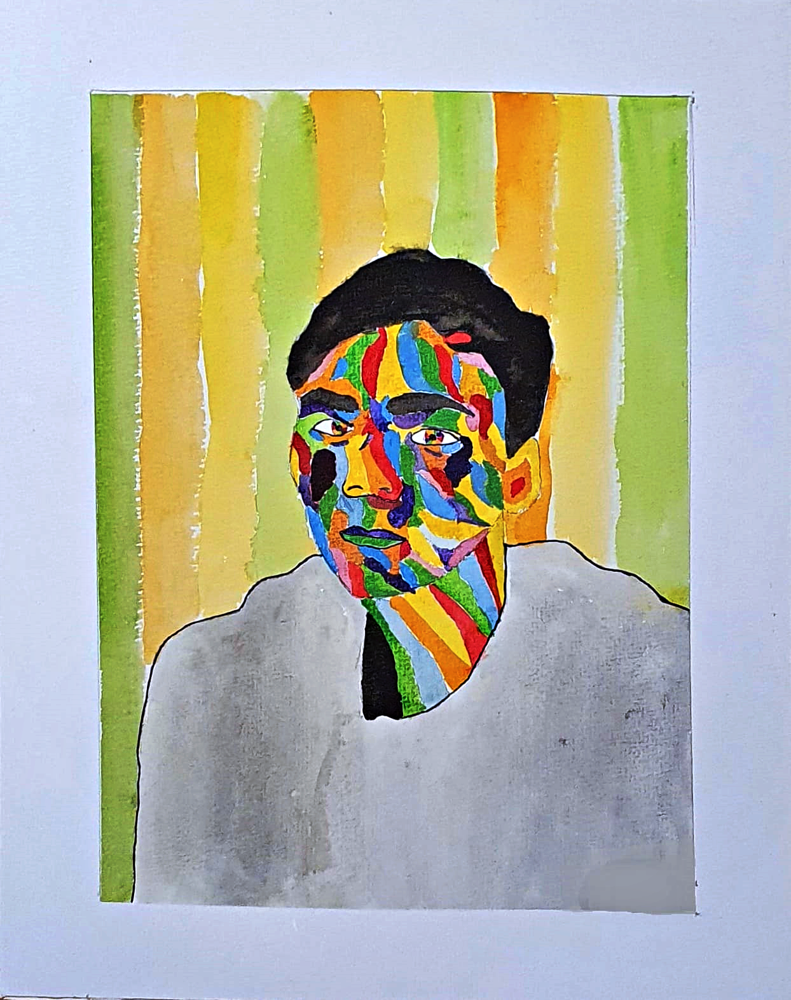

Ah, look at all the lonely people Ah, look at all the lonely people Eleanor Rigby Picks up the rice in the church where a wedding has been Lives in a dream Waits at the window Wearing the face that she keeps in a jar by the door Who is it for? All the lonely people Where do they all come from? All the lonely people Where do they all belong? Father McKenzie Writing the words of a sermon that no one will hear No one comes near Look at him working Darning his socks in the night when there's nobody there What does he care? All the lonely people Where do they all come from? All the lonely people Where do they all belong? Ah, look at all the lonely people Ah, look at all the lonely people Eleanor Rigby Died in the church and was buried along with her name Nobody came Father McKenzie Wiping the dirt from his hands as he walks from the grave No one was saved All the lonely people (ah, look at all the lonely people) Where do they all come from? All the lonely people (ah, look at all the lonely people) Where do they all belong?
